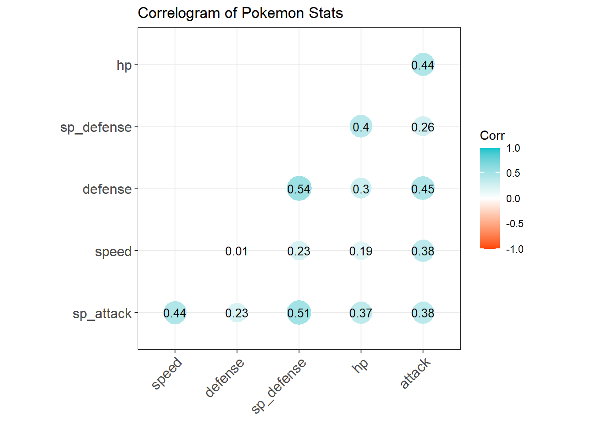
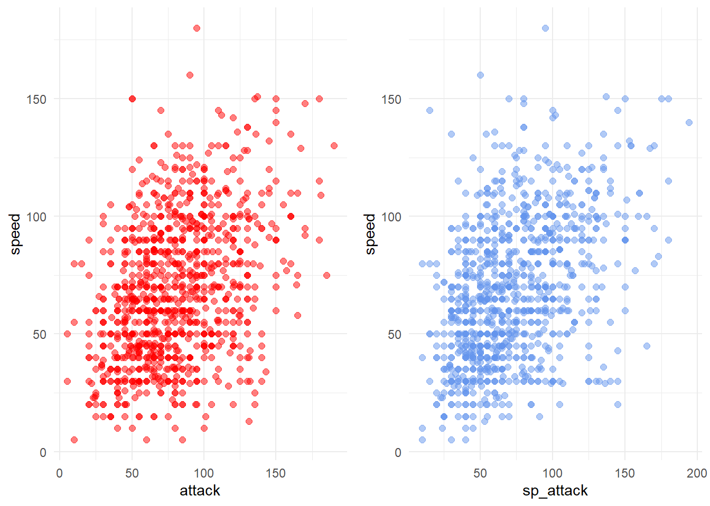
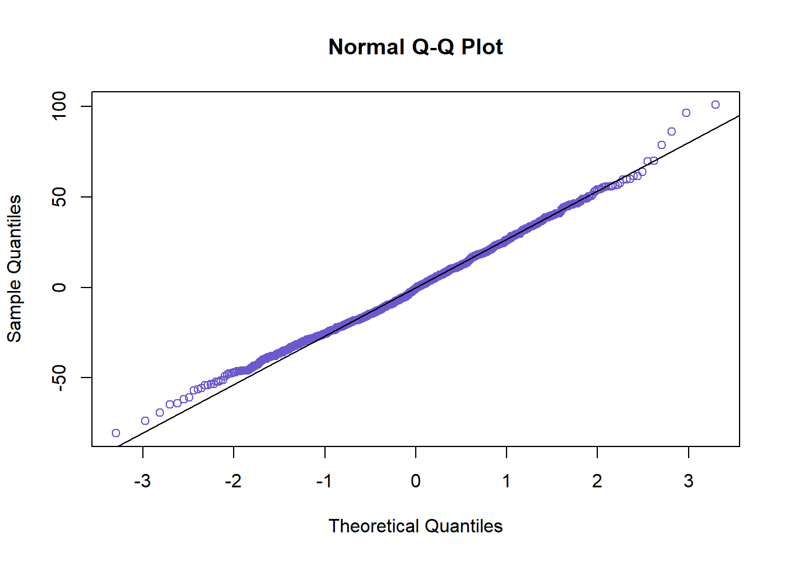
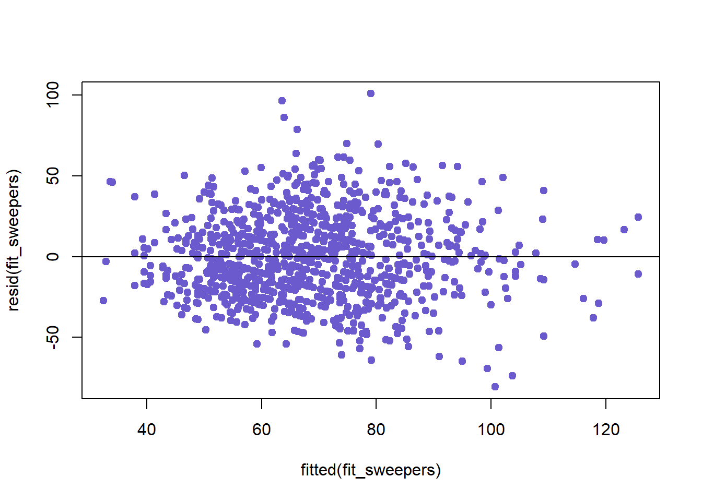
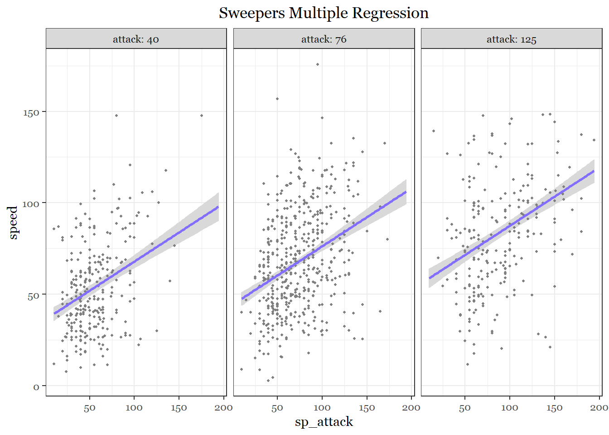
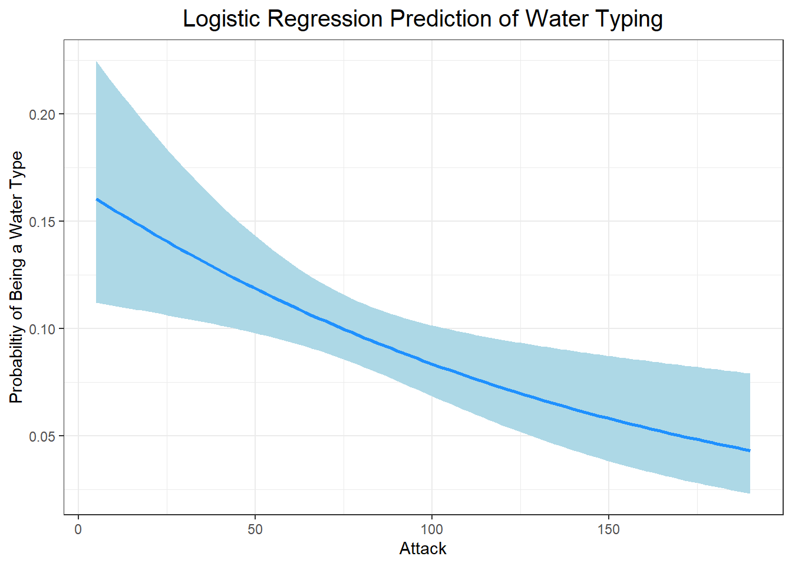
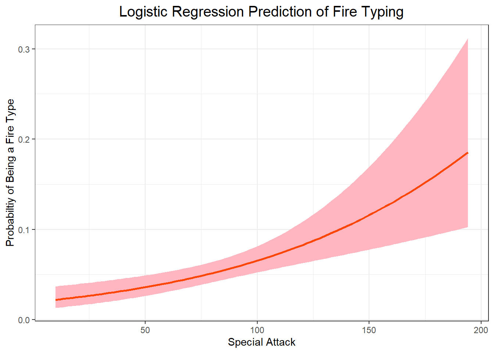
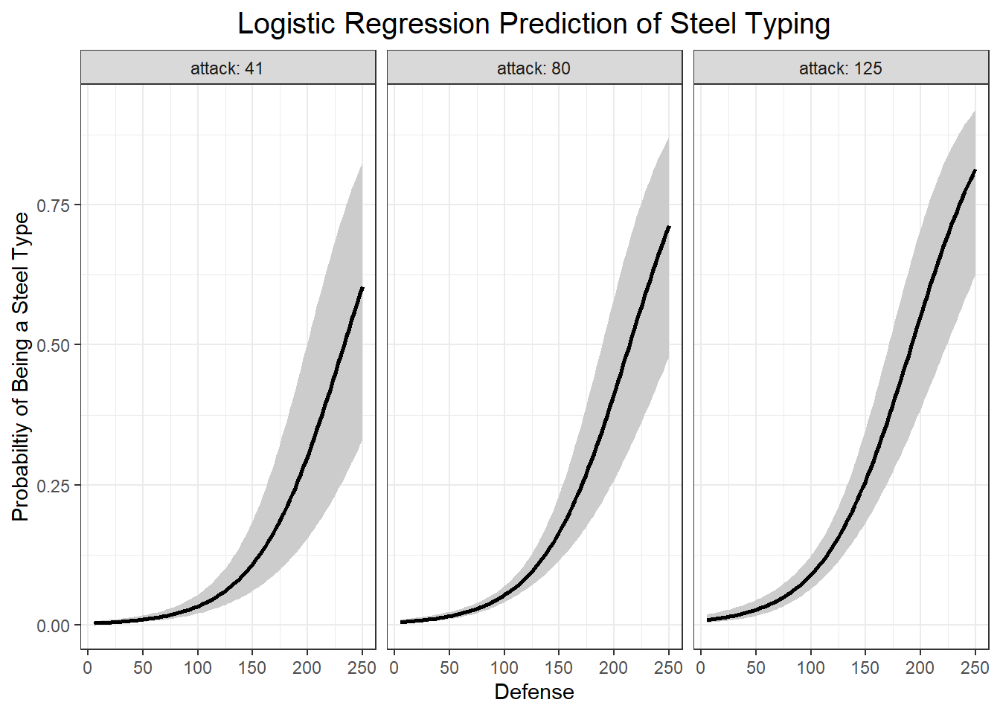
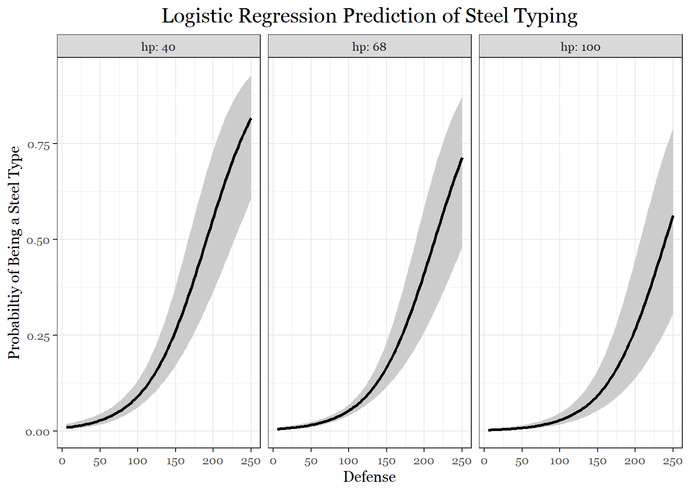

The previous section was just a warm up and an opportunity to practice creating a variety of graphs. This section will focus on analyzing statistical trends in the data set.
One of the easiest ways to get a preliminary look at the relationship between two variables is to use a correlation plot:
library(dplyr)
stat_study<-select(pokemon_data_clean, hp, attack, defense, sp_attack, sp_defense, speed)
stat_study_cor <- cor(stat_study, use = "complete.obs")
round(stat_study_cor,2)## hp attack defense sp_attack sp_defense speed
## hp 1.00 0.44 0.30 0.37 0.40 0.19
## attack 0.44 1.00 0.45 0.38 0.26 0.38
## defense 0.30 0.45 1.00 0.23 0.54 0.01
## sp_attack 0.37 0.38 0.23 1.00 0.51 0.44
## sp_defense 0.40 0.26 0.54 0.51 1.00 0.23
## speed 0.19 0.38 0.01 0.44 0.23 1.00library(ggcorrplot)
ggcorrplot(stat_study_cor,
hc.order = TRUE,
type = "lower",
lab = TRUE,
lab_size = 3.5,
outline.color = "white",
method = "circle",
colors = c("orangered","white" , "turquoise3"),
title = "Correlogram of Pokemon Stats",
ggtheme= theme_bw) ## Warning: `guides(<scale> = FALSE)` is deprecated. Please use `guides(<scale> =
## "none")` instead.
This task could get more nuanced because we can take it a step further and investigate how multiple variables together could help predict another variable (Multiple regression). Additionally, we can check for interactions in the regressions because the presence of one extra variable could affect the relationship between two others.
Because there are six variables and several different combinations of regressions possible, we will examine a single combination. In the competative Pokemon battling sphere (yes, there is one), gamers introduced terms that describe the different roles Pokemon can fulfill in battle. For more information check out this link: https://pokemondb.net/pokebase/38940/what-are-the-different-kinds-pokemon-competitive-battling
These categories are useful to us because the roles tend to be defined by stat distributions. So Pokemon that have particular combinations of stats are grouped into these catgeories. If these categories have any truth to them, then we should be able to find stat combinations that are correlated. For our purposes, we will investigate the variables typically associated with the “sweeper” role: Pokemon with a high speed, high attack and/or high special attack.
To create models that are strong representations of the patterns seen in the data, we need to examine the relationships between the variables in question using scatter plots first. This will help us identify strange features in the data like outliers or non-linearity between variables.
#Scatter Plot for speed vs attack
ap<-ggplot(pokemon_data_clean, aes(x=attack, y = speed)) +
geom_point(shape= 19, size= 2, color = "red", alpha = .5)+
theme_minimal()+
theme(legend.position = "none",
text = element_text(family = "Georgia"))
#Scatter Plot for speed vs sp.attack
spap<-ggplot(pokemon_data_clean, aes(x= sp_attack, y = speed))+
geom_point(shape= 19, size= 2, color ="cornflowerblue", alpha = .5)+
theme_minimal()+
theme(legend.position = "none",
text = element_text(family = "Georgia"))
grid.arrange(ap,spap, ncol=2)
The explanatory variables (attack, sp_attack) seem to have an expected linear relationship with the response variable (speed). No interesting features seem to have been revealed, meaning we can continue to the regression modeling phase.
Let’s run a few regressions to investigate the significance between the “sweeper” variables:
#linear regression attack vs speed
fit_sweepers_a<- lm(speed ~ attack, data = pokemon_data_clean)
summary(fit_sweepers_a)##
## Call:
## lm(formula = speed ~ attack, data = pokemon_data_clean)
##
## Residuals:
## Min 1Q Median 3Q Max
## -73.382 -20.589 -1.215 19.496 106.246
##
## Coefficients:
## Estimate Std. Error t value Pr(>|t|)
## (Intercept) 40.42908 2.29605 17.61 <2e-16 ***
## attack 0.35079 0.02657 13.20 <2e-16 ***
## ---
## Signif. codes: 0 '***' 0.001 '**' 0.01 '*' 0.05 '.' 0.1 ' ' 1
##
## Residual standard error: 27.57 on 1026 degrees of freedom
## Multiple R-squared: 0.1452, Adjusted R-squared: 0.1444
## F-statistic: 174.3 on 1 and 1026 DF, p-value: < 2.2e-16#linear regression special attack vs speed
fit_sweepers_spa<- lm(speed ~ sp_attack, data = pokemon_data_clean)
summary(fit_sweepers_spa)##
## Call:
## lm(formula = speed ~ sp_attack, data = pokemon_data_clean)
##
## Residuals:
## Min 1Q Median 3Q Max
## -77.730 -19.285 -1.098 17.938 102.470
##
## Coefficients:
## Estimate Std. Error t value Pr(>|t|)
## (Intercept) 39.15073 2.03521 19.24 <2e-16 ***
## sp_attack 0.40399 0.02553 15.83 <2e-16 ***
## ---
## Signif. codes: 0 '***' 0.001 '**' 0.01 '*' 0.05 '.' 0.1 ' ' 1
##
## Residual standard error: 26.73 on 1026 degrees of freedom
## Multiple R-squared: 0.1962, Adjusted R-squared: 0.1954
## F-statistic: 250.5 on 1 and 1026 DF, p-value: < 2.2e-16#multiple regression attack & special attack vs speed
fit_sweepers<- lm(speed ~ attack + sp_attack, data = pokemon_data_clean)
summary(fit_sweepers)##
## Call:
## lm(formula = speed ~ attack + sp_attack, data = pokemon_data_clean)
##
## Residuals:
## Min 1Q Median 3Q Max
## -80.706 -18.278 -0.539 17.828 100.957
##
## Coefficients:
## Estimate Std. Error t value Pr(>|t|)
## (Intercept) 26.96255 2.42913 11.100 <2e-16 ***
## attack 0.22991 0.02688 8.553 <2e-16 ***
## sp_attack 0.31831 0.02663 11.953 <2e-16 ***
## ---
## Signif. codes: 0 '***' 0.001 '**' 0.01 '*' 0.05 '.' 0.1 ' ' 1
##
## Residual standard error: 25.84 on 1025 degrees of freedom
## Multiple R-squared: 0.2498, Adjusted R-squared: 0.2483
## F-statistic: 170.6 on 2 and 1025 DF, p-value: < 2.2e-16#multiple regression attack & special attack vs speed with interaction included
fit_sweepers1<- lm(speed ~ attack + sp_attack + attack*sp_attack, data = pokemon_data_clean)
summary(fit_sweepers1)##
## Call:
## lm(formula = speed ~ attack + sp_attack + attack * sp_attack,
## data = pokemon_data_clean)
##
## Residuals:
## Min 1Q Median 3Q Max
## -78.198 -18.669 -0.217 17.659 100.590
##
## Coefficients:
## Estimate Std. Error t value Pr(>|t|)
## (Intercept) 18.6001920 4.5871795 4.055 5.40e-05 ***
## attack 0.3307608 0.0540868 6.115 1.37e-09 ***
## sp_attack 0.4389963 0.0621682 7.061 3.04e-12 ***
## attack:sp_attack -0.0013648 0.0006355 -2.148 0.032 *
## ---
## Signif. codes: 0 '***' 0.001 '**' 0.01 '*' 0.05 '.' 0.1 ' ' 1
##
## Residual standard error: 25.79 on 1024 degrees of freedom
## Multiple R-squared: 0.2531, Adjusted R-squared: 0.2509
## F-statistic: 115.7 on 3 and 1024 DF, p-value: < 2.2e-16From these models, we can see that both explanatory variables are significantly correlated with the response variable. According to the multiple R squared value in the first model, we learned that about 14.5 percent of the variation in speed could be explained by the variation in attack. In the second model, 19.6 percent of the variation in speed can be explained by variation in special attack. Thus, much like the results from the correlation plot, special attack and speed are a little more correlated than attack and speed are.
The first multiple regression shows that about 25 percent of the variation in speed can be accounted for by the variation in attack and speed together. The last model shows another multiple regression which, this time, controls for an interaction between the two variables. This interaction, if significant, could mean that having more or less attack stat could affect how strongly special attack and speed or correlated. In our last model, we can see that although the interaction effect is slightly significant, it does not substantially help predict any more variation than our first multiple regression model. In the gaming context, this makes sense because having more of one of these offensive stats does not guarantee that a Pokemon will be fast and good at the other. Often times, sweepers are good at speed and one of the offensive stats. Although, mixed offensive sweepers do exist, special attacking or physical attacking sweepers are more common.
At this point, either of the multiple regression models could work. However, since the interaction effect in the second model is so small, I will continue with the more general model.
But before moving forward, we need to check whether we violated any of the assumptions that come with building regression models.
#Checking for Normaility
residuals(fit_sweepers)qqnorm(residuals(fit_sweepers), col= "slateblue" )
qqline(residuals(fit_sweepers))
#Checking for Constant Conditional SDs and Linearity
plot(fitted(fit_sweepers),resid(fit_sweepers), col= "slateblue", pch= 19)
abline(h=0) 
None of the assumptions seem to have been violated, so we can move to the last stage and plot our multiple regression.
library(visreg)
visreg(fit_sweepers, "sp_attack", by= "attack", gg= TRUE,
line= list(col ="slateblue1"),
fill = list(col = "grey85"))+
theme_bw()+
labs(title = "Sweepers Multiple Regression")+
theme(text = element_text(family = "Georgia"),
plot.title = element_text(size = 13, margin(b = 10), hjust = 0.5, family = "Georgia"))
Earlier, I showed which types had the most points, on average, for each stat. Now, I want to know which stats are correlated with particular types. Specifically, I want to investigate if specific stat combinations could be used to predict whether a Pokemon is a particular type. One of the best ways to accomplish this is to use logistic regressions.
Since there are so many types, I am going to pick only 5 to study: water, dragon, fire, ice, and steel.
Step 1, like before I need a data frame that merges type_ 1 and type_2 into a single variable to account for each time a type is observed:
predict_type1<- data.frame(pokemon_data_clean[,c(5,9:15)])
predict_type2<- data.frame(pokemon_data_clean[,c(6,9:15)])
names(predict_type1)[names(predict_type1) == "type_1"]<- "type"
names(predict_type2)[names(predict_type2) == "type_2"]<- "type"
predict_type<- rbind(predict_type1, predict_type2)
predict_type<- data.frame(predict_type[predict_type$type != "",])
str(predict_type)## 'data.frame': 1570 obs. of 8 variables:
## $ type : chr "Grass" "Grass" "Grass" "Grass" ...
## $ total_points: int 318 405 525 625 309 405 534 634 634 314 ...
## $ hp : int 45 60 80 80 39 58 78 78 78 44 ...
## $ attack : int 49 62 82 100 52 64 84 130 104 48 ...
## $ defense : int 49 63 83 123 43 58 78 111 78 65 ...
## $ sp_attack : int 65 80 100 122 60 80 109 130 159 50 ...
## $ sp_defense : int 65 80 100 120 50 65 85 85 115 64 ...
## $ speed : int 45 60 80 80 65 80 100 100 100 43 ...Because logistic regressions require the response variable to be bivariate, I need to change the data so that the logistic regression considers only two type categories: the type itself and all the other types. The two categories need to be numeric, so we will say that being the specific type is = 1, otherwise it is = 0.
#Water
predict_water<- mutate(predict_type,
type = ifelse(type == "Water", 1, 0))
table(predict_water$type) ##
## 0 1
## 1417 153#Fire
predict_fire<- mutate(predict_type,
type = ifelse(type == "Fire", 1, 0))
table(predict_fire$type) ##
## 0 1
## 1488 82#Dragon
predict_dragon<- mutate(predict_type,
type = ifelse(type == "Dragon", 1, 0))
table(predict_dragon$type) ##
## 0 1
## 1498 72#Ice
predict_ice<- mutate(predict_type,
type = ifelse(type == "Ice", 1, 0))
table(predict_ice$type) ##
## 0 1
## 1515 55#Steel
predict_steel<- mutate(predict_type,
type = ifelse(type == "Steel", 1, 0))
table(predict_steel$type) ##
## 0 1
## 1499 71Now, I am going to create logistic regression models that will reveal the stats most correlated with each type.
#Water
fit_predict_water<-glm(type~ hp+ attack + defense+ sp_attack + sp_defense + speed, family= binomial, data = predict_water)
summary(fit_predict_water)##
## Call:
## glm(formula = type ~ hp + attack + defense + sp_attack + sp_defense +
## speed, family = binomial, data = predict_water)
##
## Deviance Residuals:
## Min 1Q Median 3Q Max
## -0.7010 -0.4854 -0.4399 -0.3834 2.5567
##
## Coefficients:
## Estimate Std. Error z value Pr(>|z|)
## (Intercept) -1.674333 0.324341 -5.162 2.44e-07 ***
## hp 0.003500 0.003638 0.962 0.33595
## attack -0.010449 0.003758 -2.780 0.00543 **
## defense 0.003222 0.003616 0.891 0.37288
## sp_attack 0.005619 0.003426 1.640 0.10096
## sp_defense -0.005694 0.004333 -1.314 0.18878
## speed -0.003365 0.003555 -0.947 0.34386
## ---
## Signif. codes: 0 '***' 0.001 '**' 0.01 '*' 0.05 '.' 0.1 ' ' 1
##
## (Dispersion parameter for binomial family taken to be 1)
##
## Null deviance: 1003.07 on 1569 degrees of freedom
## Residual deviance: 989.63 on 1563 degrees of freedom
## AIC: 1003.6
##
## Number of Fisher Scoring iterations: 5#fire
fit_predict_fire<-glm(type~ hp+ attack + defense+ sp_attack + sp_defense + speed, family= binomial, data = predict_fire)
summary(fit_predict_fire)##
## Call:
## glm(formula = type ~ hp + attack + defense + sp_attack + sp_defense +
## speed, family = binomial, data = predict_fire)
##
## Deviance Residuals:
## Min 1Q Median 3Q Max
## -1.1580 -0.3521 -0.2949 -0.2482 2.7702
##
## Coefficients:
## Estimate Std. Error z value Pr(>|z|)
## (Intercept) -2.925784 0.463562 -6.312 2.76e-10 ***
## hp -0.003158 0.005682 -0.556 0.5783
## attack 0.001543 0.004585 0.337 0.7364
## defense -0.009756 0.005769 -1.691 0.0908 .
## sp_attack 0.017982 0.004343 4.141 3.46e-05 ***
## sp_defense -0.007631 0.006316 -1.208 0.2270
## speed -0.000860 0.004536 -0.190 0.8496
## ---
## Signif. codes: 0 '***' 0.001 '**' 0.01 '*' 0.05 '.' 0.1 ' ' 1
##
## (Dispersion parameter for binomial family taken to be 1)
##
## Null deviance: 643.79 on 1569 degrees of freedom
## Residual deviance: 616.83 on 1563 degrees of freedom
## AIC: 630.83
##
## Number of Fisher Scoring iterations: 6#Dragon
fit_predict_dragon<-glm(type~ hp+ attack + defense+ sp_attack + sp_defense + speed, family= binomial, data = predict_dragon)
summary(fit_predict_dragon)##
## Call:
## glm(formula = type ~ hp + attack + defense + sp_attack + sp_defense +
## speed, family = binomial, data = predict_dragon)
##
## Deviance Residuals:
## Min 1Q Median 3Q Max
## -1.1756 -0.3322 -0.2578 -0.1850 3.0187
##
## Coefficients:
## Estimate Std. Error z value Pr(>|z|)
## (Intercept) -5.972832 0.533440 -11.197 < 2e-16 ***
## hp 0.011563 0.004336 2.667 0.00766 **
## attack 0.007261 0.004440 1.635 0.10199
## defense 0.004819 0.004919 0.980 0.32725
## sp_attack 0.012630 0.004269 2.959 0.00309 **
## sp_defense -0.004000 0.005961 -0.671 0.50221
## speed 0.003089 0.004760 0.649 0.51634
## ---
## Signif. codes: 0 '***' 0.001 '**' 0.01 '*' 0.05 '.' 0.1 ' ' 1
##
## (Dispersion parameter for binomial family taken to be 1)
##
## Null deviance: 584.48 on 1569 degrees of freedom
## Residual deviance: 536.04 on 1563 degrees of freedom
## AIC: 550.04
##
## Number of Fisher Scoring iterations: 6#Ice
fit_predict_ice<-glm(type~ hp+ attack + defense+ sp_attack + sp_defense + speed, family= binomial, data = predict_ice)
summary(fit_predict_ice)##
## Call:
## glm(formula = type ~ hp + attack + defense + sp_attack + sp_defense +
## speed, family = binomial, data = predict_ice)
##
## Deviance Residuals:
## Min 1Q Median 3Q Max
## -0.6964 -0.2781 -0.2579 -0.2420 2.9183
##
## Coefficients:
## Estimate Std. Error z value Pr(>|z|)
## (Intercept) -3.6778779 0.5275513 -6.972 3.13e-12 ***
## hp 0.0081322 0.0047481 1.713 0.0868 .
## attack 0.0023920 0.0054146 0.442 0.6587
## defense -0.0059962 0.0060678 -0.988 0.3231
## sp_attack -0.0008846 0.0053041 -0.167 0.8676
## sp_defense 0.0045068 0.0067890 0.664 0.5068
## speed -0.0035452 0.0055488 -0.639 0.5229
## ---
## Signif. codes: 0 '***' 0.001 '**' 0.01 '*' 0.05 '.' 0.1 ' ' 1
##
## (Dispersion parameter for binomial family taken to be 1)
##
## Null deviance: 476.72 on 1569 degrees of freedom
## Residual deviance: 472.17 on 1563 degrees of freedom
## AIC: 486.17
##
## Number of Fisher Scoring iterations: 6#Steel
fit_predict_steel<-glm(type~ hp+ attack + defense+ sp_attack + sp_defense + speed, family= binomial, data = predict_steel)
summary(fit_predict_steel)##
## Call:
## glm(formula = type ~ hp + attack + defense + sp_attack + sp_defense +
## speed, family = binomial, data = predict_steel)
##
## Deviance Residuals:
## Min 1Q Median 3Q Max
## -1.6499 -0.2869 -0.2141 -0.1726 2.8277
##
## Coefficients:
## Estimate Std. Error z value Pr(>|z|)
## (Intercept) -4.472527 0.560886 -7.974 1.54e-15 ***
## hp -0.016669 0.007022 -2.374 0.01760 *
## attack 0.014875 0.004876 3.051 0.00228 **
## defense 0.024566 0.004026 6.102 1.04e-09 ***
## sp_attack -0.002481 0.004865 -0.510 0.61004
## sp_defense -0.003952 0.004889 -0.808 0.41887
## speed -0.007006 0.005284 -1.326 0.18485
## ---
## Signif. codes: 0 '***' 0.001 '**' 0.01 '*' 0.05 '.' 0.1 ' ' 1
##
## (Dispersion parameter for binomial family taken to be 1)
##
## Null deviance: 578.39 on 1569 degrees of freedom
## Residual deviance: 490.83 on 1563 degrees of freedom
## AIC: 504.83
##
## Number of Fisher Scoring iterations: 6The findings here are really interesting. The water model summary shows that attack is the most significant stat in predicting water typing. Specifically, it is negatively correlated with water typing. This is a little surprising because I was expecting water Pokemon to be associated with special attack and special defense. Next, special attack is by far the biggest predictor of fire typing. For Dragon Pokemon, hp and special attack are the biggest predictors. In the ice model, surprisingly, hp is the best predictor of ice typing, despite it not being very significant. Finally, for steel, defense, attack, and hp are the most significant predictors in that order. Interestingly, hp is negatively correlated with steel typing.
Let’s now rebuild these models and see how well they predict the 5 typings:
#Water
fit_predict_water1<-glm(type~ attack, family= binomial, data = predict_water)
summary(fit_predict_water1)##
## Call:
## glm(formula = type ~ attack, family = binomial, data = predict_water)
##
## Deviance Residuals:
## Min 1Q Median 3Q Max
## -0.5917 -0.4845 -0.4417 -0.3949 2.4008
##
## Coefficients:
## Estimate Std. Error z value Pr(>|z|)
## (Intercept) -1.614842 0.224513 -7.193 6.35e-13 ***
## attack -0.007802 0.002763 -2.824 0.00474 **
## ---
## Signif. codes: 0 '***' 0.001 '**' 0.01 '*' 0.05 '.' 0.1 ' ' 1
##
## (Dispersion parameter for binomial family taken to be 1)
##
## Null deviance: 1003.07 on 1569 degrees of freedom
## Residual deviance: 994.74 on 1568 degrees of freedom
## AIC: 998.74
##
## Number of Fisher Scoring iterations: 5#Fire
fit_predict_fire1<-glm(type~ sp_attack, family= binomial, data = predict_fire)
summary(fit_predict_fire1)##
## Call:
## glm(formula = type ~ sp_attack, family = binomial, data = predict_fire)
##
## Deviance Residuals:
## Min 1Q Median 3Q Max
## -0.6404 -0.3567 -0.2969 -0.2626 2.7389
##
## Coefficients:
## Estimate Std. Error z value Pr(>|z|)
## (Intercept) -3.915246 0.297822 -13.146 < 2e-16 ***
## sp_attack 0.012551 0.003132 4.007 6.14e-05 ***
## ---
## Signif. codes: 0 '***' 0.001 '**' 0.01 '*' 0.05 '.' 0.1 ' ' 1
##
## (Dispersion parameter for binomial family taken to be 1)
##
## Null deviance: 643.79 on 1569 degrees of freedom
## Residual deviance: 628.43 on 1568 degrees of freedom
## AIC: 632.43
##
## Number of Fisher Scoring iterations: 6#Dragon
fit_predict_dragon1<-glm(type~ hp+ sp_attack, family= binomial, data = predict_dragon)
summary(fit_predict_dragon1)##
## Call:
## glm(formula = type ~ hp + sp_attack, family = binomial, data = predict_dragon)
##
## Deviance Residuals:
## Min 1Q Median 3Q Max
## -1.1502 -0.3325 -0.2540 -0.2005 2.9625
##
## Coefficients:
## Estimate Std. Error z value Pr(>|z|)
## (Intercept) -5.360775 0.416827 -12.861 < 2e-16 ***
## hp 0.013240 0.003635 3.643 0.00027 ***
## sp_attack 0.015361 0.003479 4.415 1.01e-05 ***
## ---
## Signif. codes: 0 '***' 0.001 '**' 0.01 '*' 0.05 '.' 0.1 ' ' 1
##
## (Dispersion parameter for binomial family taken to be 1)
##
## Null deviance: 584.48 on 1569 degrees of freedom
## Residual deviance: 543.03 on 1567 degrees of freedom
## AIC: 549.03
##
## Number of Fisher Scoring iterations: 6#Ice
fit_predict_ice1<-glm(type~ hp, family= binomial, data = predict_ice)
summary(fit_predict_ice1)##
## Call:
## glm(formula = type ~ hp, family = binomial, data = predict_ice)
##
## Deviance Residuals:
## Min 1Q Median 3Q Max
## -0.5490 -0.2744 -0.2582 -0.2429 2.7198
##
## Coefficients:
## Estimate Std. Error z value Pr(>|z|)
## (Intercept) -3.921145 0.353186 -11.102 <2e-16 ***
## hp 0.008254 0.004245 1.944 0.0518 .
## ---
## Signif. codes: 0 '***' 0.001 '**' 0.01 '*' 0.05 '.' 0.1 ' ' 1
##
## (Dispersion parameter for binomial family taken to be 1)
##
## Null deviance: 476.72 on 1569 degrees of freedom
## Residual deviance: 473.44 on 1568 degrees of freedom
## AIC: 477.44
##
## Number of Fisher Scoring iterations: 6#Steel
fit_predict_steel1<-glm(type~ hp + attack + defense, family= binomial, data = predict_steel)
summary(fit_predict_steel1)##
## Call:
## glm(formula = type ~ hp + attack + defense, family = binomial,
## data = predict_steel)
##
## Deviance Residuals:
## Min 1Q Median 3Q Max
## -1.5408 -0.2894 -0.2197 -0.1734 2.9206
##
## Coefficients:
## Estimate Std. Error z value Pr(>|z|)
## (Intercept) -4.999325 0.505492 -9.890 < 2e-16 ***
## hp -0.020672 0.006542 -3.160 0.00158 **
## attack 0.012483 0.004237 2.946 0.00322 **
## defense 0.025271 0.003242 7.796 6.4e-15 ***
## ---
## Signif. codes: 0 '***' 0.001 '**' 0.01 '*' 0.05 '.' 0.1 ' ' 1
##
## (Dispersion parameter for binomial family taken to be 1)
##
## Null deviance: 578.39 on 1569 degrees of freedom
## Residual deviance: 495.23 on 1566 degrees of freedom
## AIC: 503.23
##
## Number of Fisher Scoring iterations: 6The water and fire models did not change much in terms of significance. In the dragon model, hp did become a little more significant. Although the p-value of the hp stat in the ice model improved, it still did not go under the 0.5 alpha value needed for significance. For the steel model, defense and hp became a little more significant while attack remained about the same.
At this point in the analysis, if we really wanted to assess how well our logistic models predicted typing, we would create confusion matrices to assess each model’s “accuracy” and “recall”. Accuracy would be a decent measure of our models because it measures how well a model classifies both the specified type and the non-specified types. Recall would be another good metric to measure because it calculates how many of the actual specified type were correctly guessed. However, because our goal for this task was to find out if typing was correlated with specific stats, this kind of analysis lies outside of the scope of what we were planning to do.
But we can still do a cursory validation analysis for one of our models for fun:
pred_log_odds_s<- predict(fit_predict_steel1)
pred_prob_s<- 1/(1 + exp(-pred_log_odds_s))
prob_steel<- pred_prob_s >= .5
table(Predicted_Value = prob_steel, Actual_Value = predict_steel$type)## Actual_Value
## Predicted_Value 0 1
## FALSE 1495 68
## TRUE 4 3The accuracy for this model (true positive + true negative)/ (true positive + true negative + false positive + false negative) is equal to 1498/ 1570= 95.4 percent. This, on the surface, sounds great, but there is one problem: our model does not do a good job of correctly predicting steel Pokemon. If we look at recall, the amount of Pokemon our model predicted true divided by the actual number of steel Pokemon you get 3/71 or 4 percent. This means that my model is too conservative, meaning it is really good at detecting non-steel Pokemon but over-categorizes the observations as non-steel Pokemon. Decreasing the 0.5 threshold value would relax the filter and improve the model’s ability to classify Pokemon as steel Pokemon correctly.
All that is left to do now is plot a few of the models:
#Water Logistic Regression
visreg(fit_predict_water1, "attack",
rug = FALSE ,
xlab = "Attack",
ylab = "Probabiltiy of Being a Water Type",
line= list(col ="dodgerblue"),
fill = list(fill = "lightblue"),
scale="response",
gg = TRUE)+
theme_bw()+
labs(title = "Logistic Regression Prediction of Water Typing")+
theme(legend.position = "none",
text = element_text(family = "Georgia"),
plot.title = element_text(size = 15, margin(b = 10), hjust = 0.5, family = "Georgia"))
#Fire Logistic Regression
visreg(fit_predict_fire1, "sp_attack",
rug = FALSE ,
xlab = "Special Attack",
ylab = "Probabiltiy of Being a Fire Type",
line= list(col ="orangered"),
fill = list(fill = "lightpink"),
scale="response",
gg = TRUE)+
theme_bw()+
labs(title = "Logistic Regression Prediction of Fire Typing")+
theme(legend.position = "none",
text = element_text(family = "Georgia"),
plot.title = element_text(size = 15, margin(b = 10), hjust = 0.5, family = "Georgia"))
#Steel Logistic Regression
visreg(fit_predict_steel1, "defense", by = "attack",
rug = FALSE ,
xlab = "Defense",
ylab = "Probabiltiy of Being a Steel Type",
line= list(col ="black"),
fill = list(fill = "grey80"),
scale="response",
gg = TRUE)+
theme_bw()+
labs(title = "Logistic Regression Prediction of Steel Typing")+
theme(legend.position = "none",
text = element_text(family = "Georgia"),
plot.title = element_text(size = 15, margin(b = 10), hjust = 0.5, family = "Georgia"))
visreg(fit_predict_steel1, "defense", by = "hp",
rug = FALSE ,
xlab = "Defense",
ylab = "Probabiltiy of Being a Steel Type",
line= list(col ="black"),
fill = list(fill = "grey80"),
scale="response",
gg = TRUE)+
theme_bw()+
labs(title = "Logistic Regression Prediction of Steel Typing")+
theme(legend.position = "none",
text = element_text(family = "Georgia"),
plot.title = element_text(size = 15, margin(b = 10), hjust = 0.5, family = "Georgia"))
If we take a look at the first model, if you had an attack stat of approximately 75, there is a 10 percent chance that you could be a water Pokemon. This makes sense because water Pokemon are usually special attackers. According to the second model, if a Pokemon had a special attack stat of 150, there would be over a 10 percent chance of it being a fire type. For the steel Pokemon model, we can clearly see that the more defense you have, the more likely it is that you are a steel Pokemon. Additionally, if you also had high attack your chances of being a steel Pokemon would increase slightly as well. Conversely, we can see that the more hp you have, the less likely it is that you are a steel Pokemon.
Although the steel model, did not account for interactions, these plots may be showing signs of interaction effects. Because this task was meant to highlight possible correlations, more complex models were not considered. A future study could definitely take this a few steps further to investigate stat correlations with more types with more attention to the complexity of those correlations.